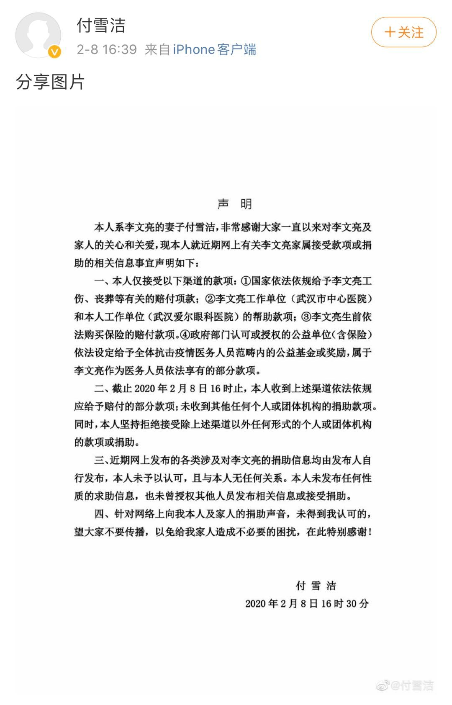

李文亮医生，那个最早预警新冠肺炎的人，走了
原文链接 备份链接 世上没有从天而降的英雄，只有挺身而出的凡人。 李文亮医生走了。 2020年2月7日凌晨3点48分，武汉市中心医院微博发布消息：我院眼科医生李文亮，在抗击新型冠状病毒感染的肺炎疫情工作中不幸感染，经全力抢救无效， …

2月7日凌晨，武汉市中心医院发布消息，“被训诫武汉医生”李文亮于2月7日2点58分不幸逝世。
2月8日16时39分，李文亮妻子的认证微博账号@付雪洁 发声明称，截至2月8日16时，其收到四个渠道依法依规应给予赔付的部分款项；未收到其他任何个人或团体机构的捐助款项。同时，其表示“本人未发布任何性质的求助信息，也未授权其他人员发布相关信息或接受捐助。”

在2月8日的公开《声明》中，李文亮妻子付雪洁就近期网上关于李文亮家属接收捐款或捐助的信息进行回应。
《声明》称，其仅接受四个渠道的款项，分别是“国家依法依规给予李文亮工伤、丧葬等有关的赔付项款；李文亮工作单位（武汉市中心医院）和本人工作单位（武汉爱尔眼科医院）的帮助款项；李文亮生前依法购买保险的赔付款项；政府部门认可或授权的公益单位（含保险）依法设定给予全体抗击疫情医务人员范畴内的公益基金或奖励，属于李文亮作为医务人员依法享有的部分款项”等。
据《声明》，截至2020年2月8日16时，其收到上述渠道依法依规应给予赔付的部分款项；未收到其他任何个人或团体机构的捐助款项。同时，其表示，“坚持拒绝接受除上述渠道以外任何形式的个人或团体机构的款项或捐助”。此外，《声明》也显示，“近期网上发布的各类涉及对李文亮的捐助信息均由发布人自行发布，本人未予以认可，且与本人无任何关系。本人未发布任何性质的求助信息，也未授权其他人员发布相关信息或接受捐助。”
2月7日凌晨，武汉市中心医院发布消息，该院眼科医生李文亮，在抗击新型冠状病毒感染的肺炎疫情工作中不幸感染，经全力抢救无效，于2月7日凌晨2点58分去世，该院深表痛惜和哀悼。
2月7日，经中央批准，国家监察委员会派出调查组赴湖北省武汉市，就群众反映的涉及李文亮医生的有关问题作全面调查。2月8日，国家监察委员会调查组已抵达武汉。
另据湖北之声、人民日报官微等报道，2月7日，武汉市人社部门认定李文亮作为医护人员在抗击新型冠状病毒感染的肺炎疫情工作中不幸感染并经抢救无效去世，属于工伤。其工伤保险待遇为一次性工亡补助金78.502万元、丧葬补助金3.6834万元，目前已拨付到位。
南方都市报（nddaily）报道
采写：南都记者 毛淑杰
* 南方都市报（nddaily）原创内容未经授权，不得转载。
▊ 南都君特选（戳下方标题）
点个“在看” ↓↓
原文链接 备份链接 世上没有从天而降的英雄，只有挺身而出的凡人。 李文亮医生走了。 2020年2月7日凌晨3点48分，武汉市中心医院微博发布消息：我院眼科医生李文亮，在抗击新型冠状病毒感染的肺炎疫情工作中不幸感染，经全力抢救无效， …
原文链接 备份链接 从1月23日“封城”到元宵节，已经过去整整17天。即使我每天忙于记日记，也觉得时间过得很快啊。 过去我要早起，6点起床，7点到办公室，不堵车。现在则是天天睡到自然醒，有点提前退休的感觉。虽然我还有两年上班的时间。 …
原文链接 备份链接 *************▲*************（黎央/图） 全文共*775*字，文字阅读大约需要2分钟。 本文首发于南方周末 未经授权 不得转载 文 | 南方周末记者 李在磊 黎央 责任编辑 | …
原文链接 备份链接 武汉中心医院眼科医生李文亮（1986-2020）（资料图/图） 全文共*5612*字，阅读大约需要14分钟。 李文亮还活着吗？李文亮抢救过来了吗？这位武汉眼科医生的命运，在这个深夜牵动着很多人的心。直到凌 …
原文链接 备份链接 他曾说，“等病好了，还上一线，不想当逃兵。” 2月7日中午13:02，中央纪委国家监委网站发布消息，经中央批准，国家监察委员会决定派出调查组赴湖北省武汉市，就群众反映的涉及李文亮医生的有关问题作全面调查。 2月6日 …